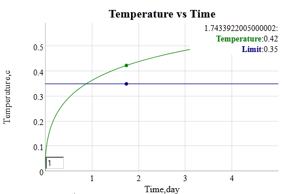

Models of thermal transients follow the boundary conditions set by temperature constraints. These boundary conditions are nevertheless compliant with large thermal masses added to the environment. This means that the thermal transient will likely asymptotially approach some intermediate value of temperature factored by the ratios of the thermal masses involeved.
The model used here applies a thermal diffusion process with a range in uncertainty of the coefficient of diffusivity or conductance.
